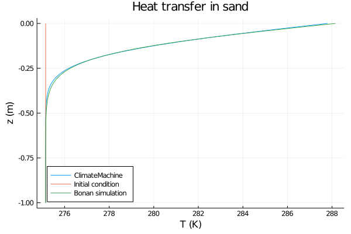

Soil Heat Tutorial
This tutorial shows how to use CliMA code to solve the heat equation in soil. For background on the heat equation in general, and how to solve it using CliMA code, please see the heat_equation.jl tutorial.
The version of the heat equation we are solving here assumes no sources or sinks and no diffusion of liquid water. It takes the form $\frac{∂ ρe_int}{∂ t} + ∇ ⋅ (-κ(θ_l, θ_i; ν, ...) ∇T) = 0$
Here ρe_int is the volumetric internal energy of the soil (J/m^3), T is the temperature of the soil (K), and κ is the thermal conductivity (W/m/K). κ is in turn a function of the soil composition, expressed in terms of the volumetric liquid water fraction θ_l, the volumetric ice fraction θ_i, and the soil type, represented by parameters ν, .... Specifying a soil type requires specifying the fraction of soil solids in different components, and specifying a porosity. The temperature T and volumetric internal energy ρe_int are related as $ρe_int = ρc_s (θ_l, θ_i; ν, ...) (T - T_0) - θ_i ρ_i LH_f0$
where ρc_s is the volumetric heat capacity of the soil (J/m^3/K), T_0 is the freezing temeprature of water, ρ_i is the density of ice (kg/m^3), and LH_f0 is the latent heat of fusion at T_0.
In this example, we will use a PrescribedWaterModel. This option allows the user to specify a function for the spatial and temporal behavior of θ_i and θ_l; it does not solve Richard's equation for the evolution of moisture. Please see the tutorials in the Coupled/ or Water/ folder for information on solving Richard's equation, either coupled or uncoupled from the heat equation.
Import necessary modules
External (non - CliMA) modules
using MPI
using OrderedCollections
using StaticArrays
using Statistics
using Dierckx
using Plots
using DelimitedFilesCliMA Parameters
using CLIMAParameters
using CLIMAParameters.Planet: ρ_cloud_liq, ρ_cloud_ice, cp_l, cp_i, T_0, LH_f0
using CLIMAParameters.Atmos.Microphysics: K_thermClimateMachine modules
using ClimateMachine
using ClimateMachine.Land
using ClimateMachine.Land.SoilWaterParameterizations
using ClimateMachine.Land.SoilHeatParameterizations
using ClimateMachine.Mesh.Topologies
using ClimateMachine.Mesh.Grids
using ClimateMachine.DGMethods
using ClimateMachine.DGMethods.NumericalFluxes
using ClimateMachine.DGMethods: BalanceLaw, LocalGeometry
using ClimateMachine.MPIStateArrays
using ClimateMachine.GenericCallbacks
using ClimateMachine.ODESolvers
using ClimateMachine.VariableTemplates
using ClimateMachine.SingleStackUtils
using ClimateMachine.BalanceLaws:
BalanceLaw, Prognostic, Auxiliary, Gradient, GradientFlux, vars_state
import ClimateMachine.DGMethods: calculate_dt
using ClimateMachine.ArtifactWrappersPreliminary set-up
Get the parameter set, which holds constants used across CliMA models.
struct EarthParameterSet <: AbstractEarthParameterSet end
const param_set = EarthParameterSet()Main.ex-bonan_heat_tutorial.EarthParameterSet()
Initialize and pick a floating point precision.
ClimateMachine.init()
FT = Float32
const clima_dir = dirname(dirname(pathof(ClimateMachine)));Load a function that will interpolate output of simulation
include(joinpath(
clima_dir,
"tutorials",
"Land",
"Soil",
"interpolation_helper.jl",
));Determine soil parameters
This tutorial also compares the output of a ClimateMachine simulation with that of Supplemental Program 2, Chapter 5, of Bonan (2019) [1]. We found this useful as it allows us compare results from our code against a published version.
The simulation code of [1] employs a formalism for the thermal conductivity κ based on Johansen, 1975, [2]. It assumes no organic matter, and only requires the volumetric fraction of soil solids for quartz and other minerals. ClimateMachine employs the formalism of Balland and Arp (2005)[3], which requires the fraction of soil solids for quartz, gravel, organic matter, and other minerals. Dai (2019)[4] found model [3] to better match measured soil properties across a range of soil types.
To compare the output of the two simulations, we set the organic matter content and gravel content to zero in the CliMA model. The remaining soil components (quartz and other minerals) match between the two. We also run the simulation for relatively wet soil (water content at 80% of porosity). Under these conditions, the two formulations for κ, though taking different functional forms, agree well on the value of κ. The differences between models are important for soil with organic material and for soil that is relatively dry.
Below are the soil component fractions for various soil texture classes, from Cosby et al. (1984) [1, 5]. Note that these fractions are volumetric fractions, relative to other soil solids, i.e. not including pore space. These are denoted ν_ss_i: an important distinction is that the CliMA Land Documentation reserves the symbol ν_i to denote the volumetric fraction of a soil component i relative to the soil, including pore space, such that the sum over i, of ν_i, is equal to 1-porosity.
index: type
1: sand
2: loamy sand
3: sandy loam
4: silty loam
5: loam
6: sandy clay loam
7 silty clay loam
8: clay loam
9: sandy clay
10: silty clay
11: clay
ν_ss_silt_array =
FT.(
[5.0, 12.0, 32.0, 70.0, 39.0, 15.0, 56.0, 34.0, 6.0, 47.0, 20.0] ./
100.0,
)
ν_ss_quartz_array =
FT.(
[92.0, 82.0, 58.0, 17.0, 43.0, 58.0, 10.0, 32.0, 52.0, 6.0, 22.0] ./
100.0,
)
ν_ss_clay_array =
FT.(
[3.0, 6.0, 10.0, 13.0, 18.0, 27.0, 34.0, 34.0, 42.0, 47.0, 58.0] ./
100.0,
)
porosity_array =
FT.([
0.395,
0.410,
0.435,
0.485,
0.451,
0.420,
0.477,
0.476,
0.426,
0.492,
0.482,
])11-element Array{Float32,1}:
0.395
0.41
0.435
0.485
0.451
0.42
0.477
0.476
0.426
0.492
0.482Here we choose the soil type to be sandy. The soil column in uniform in space and time.
soil_type_index = 1
ν_ss_minerals =
ν_ss_clay_array[soil_type_index] + ν_ss_silt_array[soil_type_index]
ν_ss_quartz = ν_ss_quartz_array[soil_type_index]
porosity = porosity_array[soil_type_index]0.395f0
To match the formulation for κ [2] used in [1]:
ν_ss_om = FT(0.0)
ν_ss_gravel = FT(0.0)0.0f0
Now that we've chosen our soil type, we can calculate the thermal conductivity κ of the soil. This requires several other constants:
κ_quartz = FT(7.7) # W/m/K
κ_minerals = FT(2.5) # W/m/K
κ_om = FT(0.25) # W/m/K
κ_liq = FT(0.57) # W/m/K
κ_ice = FT(2.29) # W/m/K2.29f0
The thermal conductivity of air is a constant parameter used across ClimateMachine, so we will get it from that parameter set.
κ_air = FT(K_therm(param_set)) # W/m/K
κ_solid =
k_solid(ν_ss_om, ν_ss_quartz, ν_ss_minerals, κ_quartz, κ_minerals, κ_om)7.03731f0
The particle density of soil solids in moisture-free soil is taken as a constant, across soil types, as in [1]. This is a good estimate for organic material free soil. The user is referred to [3] for a more general expression.
ρp = FT(2700) # kg/m^3
κ_dry = k_dry(κ_solid, porosity, κ_air, ρp)
κ_sat_frozen = ksat_frozen(κ_solid, porosity, κ_ice)
κ_sat_unfrozen = ksat_unfrozen(κ_solid, porosity, κ_liq)2.6076639f0
The volumetric specific heat of dry soil is chosen so as to match Bonan's simulation. The user could instead compute this as: $ρc_{ds} = (1-porosity) \sum_i ν_ss_i ρcν_i$ where i ranges over soil components, ν_ss_i is the volumetric fraction of soil component i, relative to the soil solids, and ρcν_i is the volumetric heat capacity of that component.
ρc_ds = FT((1 - porosity) * 1.926e06) # J/m^3/K
soil_param_functions = SoilParamFunctions{FT}(
porosity = porosity,
ν_ss_gravel = ν_ss_gravel,
ν_ss_om = ν_ss_om,
ν_ss_quartz = ν_ss_quartz,
ρc_ds = ρc_ds,
κ_dry = κ_dry,
κ_sat_unfrozen = κ_sat_unfrozen,
κ_sat_frozen = κ_sat_frozen,
a = 0.24, # used in the Kersten number [3]
b = 18.1, # used in the Kersten number [3]
)ClimateMachine.Land.SoilParamFunctions{Float32}(0.395f0, NaN32, NaN32, 0.0f0, 0.0f0, 0.92f0, 1.16523f6, 0.55057514f0, 2.6076639f0, 4.5166464f0, 0.24f0, 18.1f0)Initial and Boundary conditions
We will be using a PrescribedWaterModel, where the user supplies the augmented liquid fraction and ice fraction as functions of space and time. Since we are not implementing phase changes, it makes sense to either have entirely liquid or frozen water. This tutorial shows liquid water.
Because the two models for thermal conductivity agree well for wetter soil, we'll choose that here. However, the user could also explore how they differ by choosing drier soil.
Please note that if the user uses a mix of liquid and frozen water, that they must ensure that the total water content does not exceed porosity.
prescribed_augmented_liquid_fraction = FT(porosity * 0.8)
prescribed_volumetric_ice_fraction = FT(0.0)0.0f0
Choose boundary conditions for heat that will not lead to freezing of water:
heat_surface_state = (aux, t) -> eltype(aux)(288.15)
heat_bottom_flux = (aux, t) -> eltype(aux)(0.0)
T_init = (aux) -> eltype(aux)(275.15)#5 (generic function with 1 method)
We also need to define a function init_soil!, which initializes all of the prognostic variables (here, we only have ρe_int, the volumetric internal energy). The initialization is based on user-specified initial conditions. Note that the user provides initial conditions for heat based on the temperature - init_soil! also converts between T and ρe_int.
function init_soil!(land, state, aux, coordinates, time)
ϑ_l, θ_i = get_water_content(land.soil.water, aux, state, time)
θ_l = volumetric_liquid_fraction(ϑ_l, land.soil.param_functions.porosity)
ρc_ds = land.soil.param_functions.ρc_ds
ρc_s = volumetric_heat_capacity(θ_l, θ_i, ρc_ds, land.param_set)
state.soil.heat.ρe_int = volumetric_internal_energy(
θ_i,
ρc_s,
land.soil.heat.initialT(aux),
land.param_set,
)
endinit_soil! (generic function with 1 method)
Create the soil model structure
soil_water_model = PrescribedWaterModel(
(aux, t) -> prescribed_augmented_liquid_fraction,
(aux, t) -> prescribed_volumetric_ice_fraction,
)
soil_heat_model = SoilHeatModel(
FT;
initialT = T_init,
dirichlet_bc = Dirichlet(
surface_state = heat_surface_state,
bottom_state = nothing,
),
neumann_bc = Neumann(
surface_flux = nothing,
bottom_flux = heat_bottom_flux,
),
)
m_soil = SoilModel(soil_param_functions, soil_water_model, soil_heat_model)
sources = ()
m = LandModel(
param_set,
m_soil;
source = sources,
init_state_prognostic = init_soil!,
)ClimateMachine.Land.LandModel{Main.ex-bonan_heat_tutorial.EarthParameterSet,ClimateMachine.Land.SoilModel{ClimateMachine.Land.SoilParamFunctions{Float32},ClimateMachine.Land.PrescribedWaterModel{Main.ex-bonan_heat_tutorial.var"#7#9",Main.ex-bonan_heat_tutorial.var"#8#10"},ClimateMachine.Land.SoilHeatModel{Float32,Main.ex-bonan_heat_tutorial.var"#5#6",ClimateMachine.Land.Dirichlet{Main.ex-bonan_heat_tutorial.var"#1#2",Nothing},ClimateMachine.Land.Neumann{Nothing,Main.ex-bonan_heat_tutorial.var"#3#4"}}},Tuple{},typeof(Main.ex-bonan_heat_tutorial.init_soil!)}(Main.ex-bonan_heat_tutorial.EarthParameterSet(), ClimateMachine.Land.SoilModel{ClimateMachine.Land.SoilParamFunctions{Float32},ClimateMachine.Land.PrescribedWaterModel{Main.ex-bonan_heat_tutorial.var"#7#9",Main.ex-bonan_heat_tutorial.var"#8#10"},ClimateMachine.Land.SoilHeatModel{Float32,Main.ex-bonan_heat_tutorial.var"#5#6",ClimateMachine.Land.Dirichlet{Main.ex-bonan_heat_tutorial.var"#1#2",Nothing},ClimateMachine.Land.Neumann{Nothing,Main.ex-bonan_heat_tutorial.var"#3#4"}}}(ClimateMachine.Land.SoilParamFunctions{Float32}(0.395f0, NaN32, NaN32, 0.0f0, 0.0f0, 0.92f0, 1.16523f6, 0.55057514f0, 2.6076639f0, 4.5166464f0, 0.24f0, 18.1f0), ClimateMachine.Land.PrescribedWaterModel{Main.ex-bonan_heat_tutorial.var"#7#9",Main.ex-bonan_heat_tutorial.var"#8#10"}(Main.ex-bonan_heat_tutorial.var"#7#9"(), Main.ex-bonan_heat_tutorial.var"#8#10"()), ClimateMachine.Land.SoilHeatModel{Float32,Main.ex-bonan_heat_tutorial.var"#5#6",ClimateMachine.Land.Dirichlet{Main.ex-bonan_heat_tutorial.var"#1#2",Nothing},ClimateMachine.Land.Neumann{Nothing,Main.ex-bonan_heat_tutorial.var"#3#4"}}(Main.ex-bonan_heat_tutorial.var"#5#6"(), ClimateMachine.Land.Dirichlet{Main.ex-bonan_heat_tutorial.var"#1#2",Nothing}(Main.ex-bonan_heat_tutorial.var"#1#2"(), nothing), ClimateMachine.Land.Neumann{Nothing,Main.ex-bonan_heat_tutorial.var"#3#4"}(nothing, Main.ex-bonan_heat_tutorial.var"#3#4"()))), (), Main.ex-bonan_heat_tutorial.init_soil!)Specify the numerical details
These include the resolution, domain boundaries, integration time, Courant number, and ODE solver.
N_poly = 1
nelem_vert = 100
zmax = FT(0)
zmin = FT(-1)
driver_config = ClimateMachine.SingleStackConfiguration(
"LandModel",
N_poly,
nelem_vert,
zmax,
param_set,
m;
zmin = zmin,
numerical_flux_first_order = CentralNumericalFluxFirstOrder(),
)ClimateMachine.DriverConfiguration{Float32}(ClimateMachine.ConfigTypes.SingleStackConfigType(), "LandModel", 1, Array, ExplicitSolverType(ClimateMachine.ODESolvers.LSRK54CarpenterKennedy), Main.ex-bonan_heat_tutorial.EarthParameterSet(), ClimateMachine.Land.LandModel{Main.ex-bonan_heat_tutorial.EarthParameterSet,ClimateMachine.Land.SoilModel{ClimateMachine.Land.SoilParamFunctions{Float32},ClimateMachine.Land.PrescribedWaterModel{Main.ex-bonan_heat_tutorial.var"#7#9",Main.ex-bonan_heat_tutorial.var"#8#10"},ClimateMachine.Land.SoilHeatModel{Float32,Main.ex-bonan_heat_tutorial.var"#5#6",ClimateMachine.Land.Dirichlet{Main.ex-bonan_heat_tutorial.var"#1#2",Nothing},ClimateMachine.Land.Neumann{Nothing,Main.ex-bonan_heat_tutorial.var"#3#4"}}},Tuple{},typeof(Main.ex-bonan_heat_tutorial.init_soil!)}(Main.ex-bonan_heat_tutorial.EarthParameterSet(), ClimateMachine.Land.SoilModel{ClimateMachine.Land.SoilParamFunctions{Float32},ClimateMachine.Land.PrescribedWaterModel{Main.ex-bonan_heat_tutorial.var"#7#9",Main.ex-bonan_heat_tutorial.var"#8#10"},ClimateMachine.Land.SoilHeatModel{Float32,Main.ex-bonan_heat_tutorial.var"#5#6",ClimateMachine.Land.Dirichlet{Main.ex-bonan_heat_tutorial.var"#1#2",Nothing},ClimateMachine.Land.Neumann{Nothing,Main.ex-bonan_heat_tutorial.var"#3#4"}}}(ClimateMachine.Land.SoilParamFunctions{Float32}(0.395f0, NaN32, NaN32, 0.0f0, 0.0f0, 0.92f0, 1.16523f6, 0.55057514f0, 2.6076639f0, 4.5166464f0, 0.24f0, 18.1f0), ClimateMachine.Land.PrescribedWaterModel{Main.ex-bonan_heat_tutorial.var"#7#9",Main.ex-bonan_heat_tutorial.var"#8#10"}(Main.ex-bonan_heat_tutorial.var"#7#9"(), Main.ex-bonan_heat_tutorial.var"#8#10"()), ClimateMachine.Land.SoilHeatModel{Float32,Main.ex-bonan_heat_tutorial.var"#5#6",ClimateMachine.Land.Dirichlet{Main.ex-bonan_heat_tutorial.var"#1#2",Nothing},ClimateMachine.Land.Neumann{Nothing,Main.ex-bonan_heat_tutorial.var"#3#4"}}(Main.ex-bonan_heat_tutorial.var"#5#6"(), ClimateMachine.Land.Dirichlet{Main.ex-bonan_heat_tutorial.var"#1#2",Nothing}(Main.ex-bonan_heat_tutorial.var"#1#2"(), nothing), ClimateMachine.Land.Neumann{Nothing,Main.ex-bonan_heat_tutorial.var"#3#4"}(nothing, Main.ex-bonan_heat_tutorial.var"#3#4"()))), (), Main.ex-bonan_heat_tutorial.init_soil!), MPI.Comm(1140850688), ClimateMachine.Mesh.Grids.DiscontinuousSpectralElementGrid{Float32,3,1,8,Array,Array{Float32,1},Array{Float32,2},Array{Float32,3},Array{Float32,4},Array{Int64,1},Array{Int64,2},Array{Int64,3},ClimateMachine.Mesh.Topologies.StackedBrickTopology{3,Float32}}(ClimateMachine.Mesh.Topologies.StackedBrickTopology{3,Float32}(ClimateMachine.Mesh.Topologies.BoxElementTopology{3,Float32}(MPI.Comm(1140850688), 1:100, 1:100, 101:100, , Int64[], , [1, 2, 3, 4, 5, 6, 7, 8, 9, 10 … 91, 92, 93, 94, 95, 96, 97, 98, 99, 100], Int64[], Float32[0.0 1.0 … 0.0 1.0; 0.0 0.0 … 1.0 1.0; -1.0 -1.0 … -0.99 -0.99]
Float32[0.0 1.0 … 0.0 1.0; 0.0 0.0 … 1.0 1.0; -0.99 -0.99 … -0.98 -0.98]
Float32[0.0 1.0 … 0.0 1.0; 0.0 0.0 … 1.0 1.0; -0.98 -0.98 … -0.97 -0.97]
...
Float32[0.0 1.0 … 0.0 1.0; 0.0 0.0 … 1.0 1.0; -0.03 -0.03 … -0.02 -0.02]
Float32[0.0 1.0 … 0.0 1.0; 0.0 0.0 … 1.0 1.0; -0.02 -0.02 … -0.01 -0.01]
Float32[0.0 1.0 … 0.0 1.0; 0.0 0.0 … 1.0 1.0; -0.01 -0.01 … 0.0 0.0], [1 2 … 99 100; 1 2 … 99 100; … ; 1 1 … 98 99; 2 3 … 100 100], [2 2 … 2 2; 1 1 … 1 1; … ; 5 6 … 6 6; 5 5 … 5 6], [1 1 … 1 1; 1 1 … 1 1; … ; 1 1 … 1 1; 1 1 … 1 1], [0 0 … 0 0; 0 0 … 0 0; … ; 1 0 … 0 0; 0 0 … 0 2], Int64[], UnitRange{Int64}[], UnitRange{Int64}[], Int64[], true), 100), Float32[2.0 0.0 … -1.0 0.004999981; 2.000006 0.0 … -1.0 0.004999995; … ; 2.000012 0.0 … -0.99000007 0.004999995; 2.000006 0.0 … -0.99000007 0.0049999803]
Float32[1.9999942 0.0 … -0.99 0.004999966; 2.000006 0.0 … -0.99 0.004999995; … ; 2.000006 0.0 … -0.9800001 0.004999995; 1.9999942 0.0 … -0.9800001 0.004999966]
Float32[1.9999942 0.0 … -0.98 0.004999966; 2.000006 0.0 … -0.98 0.004999995; … ; 2.000006 0.0 … -0.9700001 0.004999995; 1.9999942 0.0 … -0.9700001 0.004999966]
...
Float32[2.0 0.0 … -0.03 0.0049999994; 2.0000002 0.0 … -0.03 0.0050000004; … ; 2.0000005 0.0 … -0.020000001 0.005000001; 1.9999998 0.0 … -0.020000001 0.0049999985]
Float32[1.9999999 0.0 … -0.02 0.004999999; 2.0000002 0.0 … -0.02 0.005; … ; 1.9999999 0.0 … -0.010000001 0.0049999994; 1.9999998 0.0 … -0.010000001 0.004999999]
Float32[2.0 0.0 … -0.01 0.005; 2.0 0.0 … -0.01 0.005; … ; 2.0 0.0 … -2.9802322f-10 0.005; 1.9999998 0.0 … -2.9802324f-10 0.004999999], Float32[-1.0 -1.0 -1.0 -1.0; -0.0 -0.0 -0.0 -0.0; … ; 0.002499997 0.002499997 0.002499997 0.002499997; 800.00104 800.00586 800.00104 800.00586]
Float32[1.0 1.0 1.0 1.0; 0.0 0.0 0.0 0.0; … ; 0.0024999895 0.0024999895 0.0024999895 0.0024999895; 800.00586 800.00586 800.00586 800.00586]
Float32[-0.0 -0.0 -0.0 -0.0; -1.0 -1.0 -1.0 -1.0; … ; 0.0024999897 0.0024999895 0.0024999897 0.0024999895; 800.00104 800.00586 800.00104 800.00586]
Float32[0.0 0.0 0.0 0.0; 1.0 1.0 1.0 1.0; … ; 0.002499982 0.002499982 0.002499982 0.002499982; 800.00586 800.00586 800.00586 800.00586]
Float32[-0.0 -0.0 -0.0 -0.0; -0.0 -0.0 -0.0 -0.0; … ; 0.24999994 0.24999994 0.24999994 0.24999994; 800.00104 800.00586 800.00586 800.00586]
Float32[2.9802322f-8 2.9802322f-8 2.9802322f-8 2.9802322f-8; 2.9802322f-8 2.9802322f-8 2.9802322f-8 2.9802322f-8; … ; 0.24999994 0.24999994 0.24999994 0.24999994; 800.00104 800.00586 800.00586 800.00586]
Float32[-1.0 -1.0 -1.0 -1.0; -0.0 -0.0 -0.0 -0.0; … ; 0.0024999897 0.0024999895 0.0024999897 0.0024999895; 800.00104 800.00586 800.00104 800.00586]
Float32[1.0 1.0 1.0 1.0; 0.0 0.0 0.0 0.0; … ; 0.0024999895 0.0024999897 0.0024999895 0.0024999897; 800.00586 800.00104 800.00586 800.00104]
Float32[-0.0 -0.0 -0.0 -0.0; -1.0 -1.0 -1.0 -1.0; … ; 0.0024999897 0.0024999895 0.0024999897 0.0024999895; 800.00104 800.00586 800.00104 800.00586]
Float32[0.0 0.0 0.0 0.0; 1.0 1.0 1.0 1.0; … ; 0.0024999895 0.0024999897 0.0024999895 0.0024999897; 800.00586 800.00104 800.00586 800.00104]
Float32[-2.9802322f-8 -2.9802322f-8 -2.9802322f-8 -2.9802322f-8; -2.9802322f-8 -2.9802322f-8 -2.9802322f-8 -2.9802322f-8; … ; 0.24999994 0.24999994 0.24999994 0.24999994; 800.00104 800.00586 800.00586 800.00104]
Float32[2.9802322f-8 2.9802322f-8 2.9802322f-8 2.9802322f-8; 2.9802322f-8 2.9802322f-8 2.9802322f-8 2.9802322f-8; … ; 0.24999994 0.24999994 0.24999994 0.24999994; 800.00104 800.00586 800.00586 800.00104]
Float32[-1.0 -1.0 -1.0 -1.0; -0.0 -0.0 -0.0 -0.0; … ; 0.0024999897 0.0024999895 0.0024999897 0.0024999895; 800.00104 800.00586 800.00104 800.00586]
Float32[1.0 1.0 1.0 1.0; 0.0 0.0 0.0 0.0; … ; 0.0024999895 0.0024999897 0.0024999895 0.0024999897; 800.00586 800.00104 800.00586 800.00104]
Float32[-0.0 -0.0 -0.0 -0.0; -1.0 -1.0 -1.0 -1.0; … ; 0.0024999897 0.0024999895 0.0024999897 0.0024999895; 800.00104 800.00586 800.00104 800.00586]
Float32[0.0 0.0 0.0 0.0; 1.0 1.0 1.0 1.0; … ; 0.0024999895 0.0024999897 0.0024999895 0.0024999897; 800.00586 800.00104 800.00586 800.00104]
Float32[-2.9802322f-8 -2.9802322f-8 -2.9802322f-8 -2.9802322f-8; -2.9802322f-8 -2.9802322f-8 -2.9802322f-8 -2.9802322f-8; … ; 0.24999994 0.24999994 0.24999994 0.24999994; 800.00104 800.00586 800.00586 800.00104]
Float32[2.9802322f-8 2.9802322f-8 2.9802322f-8 2.9802322f-8; 2.9802322f-8 2.9802322f-8 2.9802322f-8 2.9802322f-8; … ; 0.24999994 0.24999994 0.24999994 0.24999994; 800.00104 800.00586 800.00586 800.00104]
...
Float32[-1.0 -1.0 -1.0 -1.0; -0.0 -0.0 -0.0 -0.0; … ; 0.0024999992 0.0024999995 0.0024999992 0.0024999995; 800.0003 800.0005 800.0003 800.0005]
Float32[1.0 1.0 1.0 1.0; 0.0 0.0 0.0 0.0; … ; 0.002499999 0.002499999 0.002499999 0.002499999; 800.0005 800.0003 800.0005 800.0003]
Float32[-0.0 -0.0 -0.0 -0.0; -1.0 -1.0 -1.0 -1.0; … ; 0.002499999 0.002499999 0.002499999 0.002499999; 800.0003 800.0005 800.0003 800.0005]
Float32[0.0 0.0 0.0 0.0; 1.0 1.0 1.0 1.0; … ; 0.002499999 0.002499999 0.002499999 0.002499999; 800.0005 800.0003 800.0005 800.0003]
Float32[-9.313226f-10 -9.313226f-10 -9.313226f-10 -9.313226f-10; -9.313226f-10 -9.313226f-10 -9.313226f-10 -9.313226f-10; … ; 0.24999994 0.24999994 0.24999994 0.24999994; 800.0003 800.0005 800.0005 800.0003]
Float32[9.313226f-10 9.313226f-10 9.313226f-10 9.313226f-10; 9.313226f-10 9.313226f-10 9.313226f-10 9.313226f-10; … ; 0.24999994 0.24999994 0.24999994 0.24999994; 800.0003 800.0005 800.0005 800.0003]
Float32[-1.0 -1.0 -1.0 -1.0; -0.0 -0.0 -0.0 -0.0; … ; 0.0024999988 0.0024999988 0.0024999988 0.0024999988; 800.00037 800.00037 800.00037 800.00037]
Float32[1.0 1.0 1.0 1.0; 0.0 0.0 0.0 0.0; … ; 0.0024999992 0.0024999992 0.0024999992 0.0024999992; 800.00037 800.00024 800.00037 800.00024]
Float32[-0.0 -0.0 -0.0 -0.0; -1.0 -1.0 -1.0 -1.0; … ; 0.002499999 0.002499999 0.002499999 0.002499999; 800.00037 800.00037 800.00037 800.00037]
Float32[0.0 0.0 0.0 0.0; 1.0 1.0 1.0 1.0; … ; 0.0024999992 0.0024999992 0.0024999992 0.0024999992; 800.00037 800.00024 800.00037 800.00024]
Float32[-9.313226f-10 -9.313226f-10 -9.313226f-10 -9.313226f-10; -9.313226f-10 -9.313226f-10 -9.313226f-10 -9.313226f-10; … ; 0.24999994 0.24999994 0.24999994 0.24999994; 800.00037 800.00037 800.00037 800.00024]
Float32[0.0 0.0 0.0 0.0; 0.0 0.0 0.0 0.0; … ; 0.24999994 0.24999994 0.24999994 0.24999994; 800.00037 800.00037 800.00037 800.00024]
Float32[-1.0 -1.0 -1.0 -1.0; -0.0 -0.0 -0.0 -0.0; … ; 0.0024999992 0.0024999992 0.0024999992 0.0024999992; 800.0003 800.0003 800.0003 800.0003]
Float32[1.0 1.0 1.0 1.0; -1.3877788f-15 -1.3877788f-15 -1.3877788f-15 -1.3877788f-15; … ; 0.0024999992 0.0024999992 0.0024999992 0.0024999992; 800.0003 800.00024 800.0003 800.00024]
Float32[-0.0 -0.0 -0.0 -0.0; -1.0 -1.0 -1.0 -1.0; … ; 0.0024999992 0.0024999992 0.0024999992 0.0024999992; 800.0003 800.0003 800.0003 800.0003]
Float32[0.0 0.0 0.0 0.0; 1.0 1.0 1.0 1.0; … ; 0.0024999992 0.0024999992 0.0024999992 0.0024999992; 800.0003 800.00024 800.0003 800.00024]
Float32[-4.656613f-10 -4.656613f-10 -4.656613f-10 -4.656613f-10; -4.656613f-10 -4.656613f-10 -4.656613f-10 -4.656613f-10; … ; 0.24999994 0.24999994 0.24999994 0.24999994; 800.0003 800.0003 800.0003 800.00024]
Float32[1.3877788f-17 1.3877788f-17 1.3877788f-17 1.3877788f-17; 1.3877788f-17 1.3877788f-17 1.3877788f-17 1.3877788f-17; … ; 0.24999994 0.24999994 0.24999994 0.24999994; 800.0003 800.0003 800.0003 800.00024], [0 0 … 0 0; 0 0 … 0 0; … ; 1 0 … 0 0; 0 0 … 0 2], [1 2 … 1 5; 3 4 … 2 6; 5 6 … 3 7; 7 8 … 4 8]
[9 10 … 9 13; 11 12 … 10 14; 13 14 … 11 15; 15 16 … 12 16]
[17 18 … 17 21; 19 20 … 18 22; 21 22 … 19 23; 23 24 … 20 24]
...
[777 778 … 777 781; 779 780 … 778 782; 781 782 … 779 783; 783 784 … 780 784]
[785 786 … 785 789; 787 788 … 786 790; 789 790 … 787 791; 791 792 … 788 792]
[793 794 … 793 797; 795 796 … 794 798; 797 798 … 795 799; 799 800 … 796 800], [2 1 … 1 9; 4 3 … 2 10; 6 5 … 3 11; 8 7 … 4 12]
[10 9 … 5 17; 12 11 … 6 18; 14 13 … 7 19; 16 15 … 8 20]
[18 17 … 13 25; 20 19 … 14 26; 22 21 … 15 27; 24 23 … 16 28]
...
[778 777 … 773 785; 780 779 … 774 786; 782 781 … 775 787; 784 783 … 776 788]
[786 785 … 781 793; 788 787 … 782 794; 790 789 … 783 795; 792 791 … 784 796]
[794 793 … 789 797; 796 795 … 790 798; 798 797 … 791 799; 800 799 … 792 800], Int64[], Int64[], UnitRange{Int64}[], UnitRange{Int64}[], [1, 2, 3, 4, 5, 6, 7, 8, 9, 10 … 91, 92, 93, 94, 95, 96, 97, 98, 99, 100], Int64[], Bool[1, 1, 1, 1, 1, 1, 1, 1, 1, 1 … 1, 1, 1, 1, 1, 1, 1, 1, 1, 1], Float32[0.9999999, 0.9999999], Float32[-0.5 0.5; -0.5 0.5], Float32[0.0 0.0; 0.9999999 0.9999999]), ClimateMachine.DGMethods.NumericalFluxes.CentralNumericalFluxFirstOrder(), ClimateMachine.DGMethods.NumericalFluxes.CentralNumericalFluxSecondOrder(), ClimateMachine.DGMethods.NumericalFluxes.CentralNumericalFluxGradient(), ClimateMachine.SingleStackSpecificInfo())In this tutorial, we determine a timestep based on a Courant number ( also called a Fourier number in the context of the heat equation). In short, we can use the parameters of the model (κ and ρc_s), along with with the size of elements of the grid used for discretizing the PDE, to estimate a natural timescale for heat transfer across a grid cell. Because we are using an explicit ODE solver, the timestep should be a fraction of this in order to resolve the dynamics.
This allows us to automate, to a certain extent, choosing a value for the timestep, even as we switch between soil types.
function calculate_dt(dg, model::LandModel, Q, Courant_number, t, direction)
Δt = one(eltype(Q))
CFL = DGMethods.courant(diffusive_courant, dg, model, Q, Δt, t, direction)
return Courant_number / CFL
end
function diffusive_courant(
m::LandModel,
state::Vars,
aux::Vars,
diffusive::Vars,
Δx,
Δt,
t,
direction,
)
soil = m.soil
ϑ_l, θ_i = get_water_content(soil.water, aux, state, t)
θ_l = volumetric_liquid_fraction(ϑ_l, soil.param_functions.porosity)
κ_dry = soil.param_functions.κ_dry
S_r = relative_saturation(θ_l, θ_i, soil.param_functions.porosity)
kersten = kersten_number(θ_i, S_r, soil.param_functions)
κ_sat = saturated_thermal_conductivity(
θ_l,
θ_i,
soil.param_functions.κ_sat_unfrozen,
soil.param_functions.κ_sat_frozen,
)
κ = thermal_conductivity(κ_dry, kersten, κ_sat)
ρc_ds = soil.param_functions.ρc_ds
ρc_s = volumetric_heat_capacity(θ_l, θ_i, ρc_ds, m.param_set)
return Δt * κ / (Δx * Δx * ρc_ds)
end
t0 = FT(0)
timeend = FT(60 * 60 * 3)
Courant_number = FT(0.5) # much bigger than this breaks
solver_config = ClimateMachine.SolverConfiguration(
t0,
timeend,
driver_config;
Courant_number = Courant_number,
CFL_direction = VerticalDirection(),
)ClimateMachine.SolverConfiguration{Float32}("LandModel", MPI.Comm(1140850688), Main.ex-bonan_heat_tutorial.EarthParameterSet(), ClimateMachine.DGMethods.DGModel{ClimateMachine.Land.LandModel{Main.ex-bonan_heat_tutorial.EarthParameterSet,ClimateMachine.Land.SoilModel{ClimateMachine.Land.SoilParamFunctions{Float32},ClimateMachine.Land.PrescribedWaterModel{Main.ex-bonan_heat_tutorial.var"#7#9",Main.ex-bonan_heat_tutorial.var"#8#10"},ClimateMachine.Land.SoilHeatModel{Float32,Main.ex-bonan_heat_tutorial.var"#5#6",ClimateMachine.Land.Dirichlet{Main.ex-bonan_heat_tutorial.var"#1#2",Nothing},ClimateMachine.Land.Neumann{Nothing,Main.ex-bonan_heat_tutorial.var"#3#4"}}},Tuple{},typeof(Main.ex-bonan_heat_tutorial.init_soil!)},ClimateMachine.Mesh.Grids.DiscontinuousSpectralElementGrid{Float32,3,1,8,Array,Array{Float32,1},Array{Float32,2},Array{Float32,3},Array{Float32,4},Array{Int64,1},Array{Int64,2},Array{Int64,3},ClimateMachine.Mesh.Topologies.StackedBrickTopology{3,Float32}},ClimateMachine.DGMethods.NumericalFluxes.CentralNumericalFluxFirstOrder,ClimateMachine.DGMethods.NumericalFluxes.CentralNumericalFluxSecondOrder,ClimateMachine.DGMethods.NumericalFluxes.CentralNumericalFluxGradient,ClimateMachine.MPIStateArrays.MPIStateArray{Float32,NamedTuple{(:z, :soil),Tuple{Float32,NamedTuple{(:water, :heat),Tuple{NamedTuple{(),Tuple{}},NamedTuple{(:T,),Tuple{Float32}}}}}},Array{Float32,3},Array{Int64,1},SubArray{Float32,3,Array{Float32,3},Tuple{Base.Slice{Base.OneTo{Int64}},Base.Slice{Base.OneTo{Int64}},UnitRange{Int64}},true},ClimateMachine.MPIStateArrays.CMBuffers.CMBuffer{Float32,Array{Float32,2},Nothing}},ClimateMachine.MPIStateArrays.MPIStateArray{Float32,NamedTuple{(:soil,),Tuple{NamedTuple{(:water, :heat),Tuple{NamedTuple{(),Tuple{}},NamedTuple{(:κ∇T,),Tuple{StaticArrays.SArray{Tuple{3},Float32,1,3}}}}}}},Array{Float32,3},Array{Int64,1},SubArray{Float32,3,Array{Float32,3},Tuple{Base.Slice{Base.OneTo{Int64}},Base.Slice{Base.OneTo{Int64}},UnitRange{Int64}},true},ClimateMachine.MPIStateArrays.CMBuffers.CMBuffer{Float32,Array{Float32,2},Nothing}},Tuple{ClimateMachine.MPIStateArrays.MPIStateArray{Float32,NamedTuple{(),Tuple{}},Array{Float32,3},Array{Int64,1},SubArray{Float32,3,Array{Float32,3},Tuple{Base.Slice{Base.OneTo{Int64}},Base.Slice{Base.OneTo{Int64}},UnitRange{Int64}},true},ClimateMachine.MPIStateArrays.CMBuffers.CMBuffer{Float32,Array{Float32,2},Nothing}},ClimateMachine.MPIStateArrays.MPIStateArray{Float32,NamedTuple{(),Tuple{}},Array{Float32,3},Array{Int64,1},SubArray{Float32,3,Array{Float32,3},Tuple{Base.Slice{Base.OneTo{Int64}},Base.Slice{Base.OneTo{Int64}},UnitRange{Int64}},true},ClimateMachine.MPIStateArrays.CMBuffers.CMBuffer{Float32,Array{Float32,2},Nothing}}},ClimateMachine.Mesh.Grids.VerticalDirection,ClimateMachine.Mesh.Grids.VerticalDirection,Nothing}(ClimateMachine.Land.LandModel{Main.ex-bonan_heat_tutorial.EarthParameterSet,ClimateMachine.Land.SoilModel{ClimateMachine.Land.SoilParamFunctions{Float32},ClimateMachine.Land.PrescribedWaterModel{Main.ex-bonan_heat_tutorial.var"#7#9",Main.ex-bonan_heat_tutorial.var"#8#10"},ClimateMachine.Land.SoilHeatModel{Float32,Main.ex-bonan_heat_tutorial.var"#5#6",ClimateMachine.Land.Dirichlet{Main.ex-bonan_heat_tutorial.var"#1#2",Nothing},ClimateMachine.Land.Neumann{Nothing,Main.ex-bonan_heat_tutorial.var"#3#4"}}},Tuple{},typeof(Main.ex-bonan_heat_tutorial.init_soil!)}(Main.ex-bonan_heat_tutorial.EarthParameterSet(), ClimateMachine.Land.SoilModel{ClimateMachine.Land.SoilParamFunctions{Float32},ClimateMachine.Land.PrescribedWaterModel{Main.ex-bonan_heat_tutorial.var"#7#9",Main.ex-bonan_heat_tutorial.var"#8#10"},ClimateMachine.Land.SoilHeatModel{Float32,Main.ex-bonan_heat_tutorial.var"#5#6",ClimateMachine.Land.Dirichlet{Main.ex-bonan_heat_tutorial.var"#1#2",Nothing},ClimateMachine.Land.Neumann{Nothing,Main.ex-bonan_heat_tutorial.var"#3#4"}}}(ClimateMachine.Land.SoilParamFunctions{Float32}(0.395f0, NaN32, NaN32, 0.0f0, 0.0f0, 0.92f0, 1.16523f6, 0.55057514f0, 2.6076639f0, 4.5166464f0, 0.24f0, 18.1f0), ClimateMachine.Land.PrescribedWaterModel{Main.ex-bonan_heat_tutorial.var"#7#9",Main.ex-bonan_heat_tutorial.var"#8#10"}(Main.ex-bonan_heat_tutorial.var"#7#9"(), Main.ex-bonan_heat_tutorial.var"#8#10"()), ClimateMachine.Land.SoilHeatModel{Float32,Main.ex-bonan_heat_tutorial.var"#5#6",ClimateMachine.Land.Dirichlet{Main.ex-bonan_heat_tutorial.var"#1#2",Nothing},ClimateMachine.Land.Neumann{Nothing,Main.ex-bonan_heat_tutorial.var"#3#4"}}(Main.ex-bonan_heat_tutorial.var"#5#6"(), ClimateMachine.Land.Dirichlet{Main.ex-bonan_heat_tutorial.var"#1#2",Nothing}(Main.ex-bonan_heat_tutorial.var"#1#2"(), nothing), ClimateMachine.Land.Neumann{Nothing,Main.ex-bonan_heat_tutorial.var"#3#4"}(nothing, Main.ex-bonan_heat_tutorial.var"#3#4"()))), (), Main.ex-bonan_heat_tutorial.init_soil!), ClimateMachine.Mesh.Grids.DiscontinuousSpectralElementGrid{Float32,3,1,8,Array,Array{Float32,1},Array{Float32,2},Array{Float32,3},Array{Float32,4},Array{Int64,1},Array{Int64,2},Array{Int64,3},ClimateMachine.Mesh.Topologies.StackedBrickTopology{3,Float32}}(ClimateMachine.Mesh.Topologies.StackedBrickTopology{3,Float32}(ClimateMachine.Mesh.Topologies.BoxElementTopology{3,Float32}(MPI.Comm(1140850688), 1:100, 1:100, 101:100, , Int64[], , [1, 2, 3, 4, 5, 6, 7, 8, 9, 10 … 91, 92, 93, 94, 95, 96, 97, 98, 99, 100], Int64[], Float32[0.0 1.0 … 0.0 1.0; 0.0 0.0 … 1.0 1.0; -1.0 -1.0 … -0.99 -0.99]
Float32[0.0 1.0 … 0.0 1.0; 0.0 0.0 … 1.0 1.0; -0.99 -0.99 … -0.98 -0.98]
Float32[0.0 1.0 … 0.0 1.0; 0.0 0.0 … 1.0 1.0; -0.98 -0.98 … -0.97 -0.97]
...
Float32[0.0 1.0 … 0.0 1.0; 0.0 0.0 … 1.0 1.0; -0.03 -0.03 … -0.02 -0.02]
Float32[0.0 1.0 … 0.0 1.0; 0.0 0.0 … 1.0 1.0; -0.02 -0.02 … -0.01 -0.01]
Float32[0.0 1.0 … 0.0 1.0; 0.0 0.0 … 1.0 1.0; -0.01 -0.01 … 0.0 0.0], [1 2 … 99 100; 1 2 … 99 100; … ; 1 1 … 98 99; 2 3 … 100 100], [2 2 … 2 2; 1 1 … 1 1; … ; 5 6 … 6 6; 5 5 … 5 6], [1 1 … 1 1; 1 1 … 1 1; … ; 1 1 … 1 1; 1 1 … 1 1], [0 0 … 0 0; 0 0 … 0 0; … ; 1 0 … 0 0; 0 0 … 0 2], Int64[], UnitRange{Int64}[], UnitRange{Int64}[], Int64[], true), 100), Float32[2.0 0.0 … -1.0 0.004999981; 2.000006 0.0 … -1.0 0.004999995; … ; 2.000012 0.0 … -0.99000007 0.004999995; 2.000006 0.0 … -0.99000007 0.0049999803]
Float32[1.9999942 0.0 … -0.99 0.004999966; 2.000006 0.0 … -0.99 0.004999995; … ; 2.000006 0.0 … -0.9800001 0.004999995; 1.9999942 0.0 … -0.9800001 0.004999966]
Float32[1.9999942 0.0 … -0.98 0.004999966; 2.000006 0.0 … -0.98 0.004999995; … ; 2.000006 0.0 … -0.9700001 0.004999995; 1.9999942 0.0 … -0.9700001 0.004999966]
...
Float32[2.0 0.0 … -0.03 0.0049999994; 2.0000002 0.0 … -0.03 0.0050000004; … ; 2.0000005 0.0 … -0.020000001 0.005000001; 1.9999998 0.0 … -0.020000001 0.0049999985]
Float32[1.9999999 0.0 … -0.02 0.004999999; 2.0000002 0.0 … -0.02 0.005; … ; 1.9999999 0.0 … -0.010000001 0.0049999994; 1.9999998 0.0 … -0.010000001 0.004999999]
Float32[2.0 0.0 … -0.01 0.005; 2.0 0.0 … -0.01 0.005; … ; 2.0 0.0 … -2.9802322f-10 0.005; 1.9999998 0.0 … -2.9802324f-10 0.004999999], Float32[-1.0 -1.0 -1.0 -1.0; -0.0 -0.0 -0.0 -0.0; … ; 0.002499997 0.002499997 0.002499997 0.002499997; 800.00104 800.00586 800.00104 800.00586]
Float32[1.0 1.0 1.0 1.0; 0.0 0.0 0.0 0.0; … ; 0.0024999895 0.0024999895 0.0024999895 0.0024999895; 800.00586 800.00586 800.00586 800.00586]
Float32[-0.0 -0.0 -0.0 -0.0; -1.0 -1.0 -1.0 -1.0; … ; 0.0024999897 0.0024999895 0.0024999897 0.0024999895; 800.00104 800.00586 800.00104 800.00586]
Float32[0.0 0.0 0.0 0.0; 1.0 1.0 1.0 1.0; … ; 0.002499982 0.002499982 0.002499982 0.002499982; 800.00586 800.00586 800.00586 800.00586]
Float32[-0.0 -0.0 -0.0 -0.0; -0.0 -0.0 -0.0 -0.0; … ; 0.24999994 0.24999994 0.24999994 0.24999994; 800.00104 800.00586 800.00586 800.00586]
Float32[2.9802322f-8 2.9802322f-8 2.9802322f-8 2.9802322f-8; 2.9802322f-8 2.9802322f-8 2.9802322f-8 2.9802322f-8; … ; 0.24999994 0.24999994 0.24999994 0.24999994; 800.00104 800.00586 800.00586 800.00586]
Float32[-1.0 -1.0 -1.0 -1.0; -0.0 -0.0 -0.0 -0.0; … ; 0.0024999897 0.0024999895 0.0024999897 0.0024999895; 800.00104 800.00586 800.00104 800.00586]
Float32[1.0 1.0 1.0 1.0; 0.0 0.0 0.0 0.0; … ; 0.0024999895 0.0024999897 0.0024999895 0.0024999897; 800.00586 800.00104 800.00586 800.00104]
Float32[-0.0 -0.0 -0.0 -0.0; -1.0 -1.0 -1.0 -1.0; … ; 0.0024999897 0.0024999895 0.0024999897 0.0024999895; 800.00104 800.00586 800.00104 800.00586]
Float32[0.0 0.0 0.0 0.0; 1.0 1.0 1.0 1.0; … ; 0.0024999895 0.0024999897 0.0024999895 0.0024999897; 800.00586 800.00104 800.00586 800.00104]
Float32[-2.9802322f-8 -2.9802322f-8 -2.9802322f-8 -2.9802322f-8; -2.9802322f-8 -2.9802322f-8 -2.9802322f-8 -2.9802322f-8; … ; 0.24999994 0.24999994 0.24999994 0.24999994; 800.00104 800.00586 800.00586 800.00104]
Float32[2.9802322f-8 2.9802322f-8 2.9802322f-8 2.9802322f-8; 2.9802322f-8 2.9802322f-8 2.9802322f-8 2.9802322f-8; … ; 0.24999994 0.24999994 0.24999994 0.24999994; 800.00104 800.00586 800.00586 800.00104]
Float32[-1.0 -1.0 -1.0 -1.0; -0.0 -0.0 -0.0 -0.0; … ; 0.0024999897 0.0024999895 0.0024999897 0.0024999895; 800.00104 800.00586 800.00104 800.00586]
Float32[1.0 1.0 1.0 1.0; 0.0 0.0 0.0 0.0; … ; 0.0024999895 0.0024999897 0.0024999895 0.0024999897; 800.00586 800.00104 800.00586 800.00104]
Float32[-0.0 -0.0 -0.0 -0.0; -1.0 -1.0 -1.0 -1.0; … ; 0.0024999897 0.0024999895 0.0024999897 0.0024999895; 800.00104 800.00586 800.00104 800.00586]
Float32[0.0 0.0 0.0 0.0; 1.0 1.0 1.0 1.0; … ; 0.0024999895 0.0024999897 0.0024999895 0.0024999897; 800.00586 800.00104 800.00586 800.00104]
Float32[-2.9802322f-8 -2.9802322f-8 -2.9802322f-8 -2.9802322f-8; -2.9802322f-8 -2.9802322f-8 -2.9802322f-8 -2.9802322f-8; … ; 0.24999994 0.24999994 0.24999994 0.24999994; 800.00104 800.00586 800.00586 800.00104]
Float32[2.9802322f-8 2.9802322f-8 2.9802322f-8 2.9802322f-8; 2.9802322f-8 2.9802322f-8 2.9802322f-8 2.9802322f-8; … ; 0.24999994 0.24999994 0.24999994 0.24999994; 800.00104 800.00586 800.00586 800.00104]
...
Float32[-1.0 -1.0 -1.0 -1.0; -0.0 -0.0 -0.0 -0.0; … ; 0.0024999992 0.0024999995 0.0024999992 0.0024999995; 800.0003 800.0005 800.0003 800.0005]
Float32[1.0 1.0 1.0 1.0; 0.0 0.0 0.0 0.0; … ; 0.002499999 0.002499999 0.002499999 0.002499999; 800.0005 800.0003 800.0005 800.0003]
Float32[-0.0 -0.0 -0.0 -0.0; -1.0 -1.0 -1.0 -1.0; … ; 0.002499999 0.002499999 0.002499999 0.002499999; 800.0003 800.0005 800.0003 800.0005]
Float32[0.0 0.0 0.0 0.0; 1.0 1.0 1.0 1.0; … ; 0.002499999 0.002499999 0.002499999 0.002499999; 800.0005 800.0003 800.0005 800.0003]
Float32[-9.313226f-10 -9.313226f-10 -9.313226f-10 -9.313226f-10; -9.313226f-10 -9.313226f-10 -9.313226f-10 -9.313226f-10; … ; 0.24999994 0.24999994 0.24999994 0.24999994; 800.0003 800.0005 800.0005 800.0003]
Float32[9.313226f-10 9.313226f-10 9.313226f-10 9.313226f-10; 9.313226f-10 9.313226f-10 9.313226f-10 9.313226f-10; … ; 0.24999994 0.24999994 0.24999994 0.24999994; 800.0003 800.0005 800.0005 800.0003]
Float32[-1.0 -1.0 -1.0 -1.0; -0.0 -0.0 -0.0 -0.0; … ; 0.0024999988 0.0024999988 0.0024999988 0.0024999988; 800.00037 800.00037 800.00037 800.00037]
Float32[1.0 1.0 1.0 1.0; 0.0 0.0 0.0 0.0; … ; 0.0024999992 0.0024999992 0.0024999992 0.0024999992; 800.00037 800.00024 800.00037 800.00024]
Float32[-0.0 -0.0 -0.0 -0.0; -1.0 -1.0 -1.0 -1.0; … ; 0.002499999 0.002499999 0.002499999 0.002499999; 800.00037 800.00037 800.00037 800.00037]
Float32[0.0 0.0 0.0 0.0; 1.0 1.0 1.0 1.0; … ; 0.0024999992 0.0024999992 0.0024999992 0.0024999992; 800.00037 800.00024 800.00037 800.00024]
Float32[-9.313226f-10 -9.313226f-10 -9.313226f-10 -9.313226f-10; -9.313226f-10 -9.313226f-10 -9.313226f-10 -9.313226f-10; … ; 0.24999994 0.24999994 0.24999994 0.24999994; 800.00037 800.00037 800.00037 800.00024]
Float32[0.0 0.0 0.0 0.0; 0.0 0.0 0.0 0.0; … ; 0.24999994 0.24999994 0.24999994 0.24999994; 800.00037 800.00037 800.00037 800.00024]
Float32[-1.0 -1.0 -1.0 -1.0; -0.0 -0.0 -0.0 -0.0; … ; 0.0024999992 0.0024999992 0.0024999992 0.0024999992; 800.0003 800.0003 800.0003 800.0003]
Float32[1.0 1.0 1.0 1.0; -1.3877788f-15 -1.3877788f-15 -1.3877788f-15 -1.3877788f-15; … ; 0.0024999992 0.0024999992 0.0024999992 0.0024999992; 800.0003 800.00024 800.0003 800.00024]
Float32[-0.0 -0.0 -0.0 -0.0; -1.0 -1.0 -1.0 -1.0; … ; 0.0024999992 0.0024999992 0.0024999992 0.0024999992; 800.0003 800.0003 800.0003 800.0003]
Float32[0.0 0.0 0.0 0.0; 1.0 1.0 1.0 1.0; … ; 0.0024999992 0.0024999992 0.0024999992 0.0024999992; 800.0003 800.00024 800.0003 800.00024]
Float32[-4.656613f-10 -4.656613f-10 -4.656613f-10 -4.656613f-10; -4.656613f-10 -4.656613f-10 -4.656613f-10 -4.656613f-10; … ; 0.24999994 0.24999994 0.24999994 0.24999994; 800.0003 800.0003 800.0003 800.00024]
Float32[1.3877788f-17 1.3877788f-17 1.3877788f-17 1.3877788f-17; 1.3877788f-17 1.3877788f-17 1.3877788f-17 1.3877788f-17; … ; 0.24999994 0.24999994 0.24999994 0.24999994; 800.0003 800.0003 800.0003 800.00024], [0 0 … 0 0; 0 0 … 0 0; … ; 1 0 … 0 0; 0 0 … 0 2], [1 2 … 1 5; 3 4 … 2 6; 5 6 … 3 7; 7 8 … 4 8]
[9 10 … 9 13; 11 12 … 10 14; 13 14 … 11 15; 15 16 … 12 16]
[17 18 … 17 21; 19 20 … 18 22; 21 22 … 19 23; 23 24 … 20 24]
...
[777 778 … 777 781; 779 780 … 778 782; 781 782 … 779 783; 783 784 … 780 784]
[785 786 … 785 789; 787 788 … 786 790; 789 790 … 787 791; 791 792 … 788 792]
[793 794 … 793 797; 795 796 … 794 798; 797 798 … 795 799; 799 800 … 796 800], [2 1 … 1 9; 4 3 … 2 10; 6 5 … 3 11; 8 7 … 4 12]
[10 9 … 5 17; 12 11 … 6 18; 14 13 … 7 19; 16 15 … 8 20]
[18 17 … 13 25; 20 19 … 14 26; 22 21 … 15 27; 24 23 … 16 28]
...
[778 777 … 773 785; 780 779 … 774 786; 782 781 … 775 787; 784 783 … 776 788]
[786 785 … 781 793; 788 787 … 782 794; 790 789 … 783 795; 792 791 … 784 796]
[794 793 … 789 797; 796 795 … 790 798; 798 797 … 791 799; 800 799 … 792 800], Int64[], Int64[], UnitRange{Int64}[], UnitRange{Int64}[], [1, 2, 3, 4, 5, 6, 7, 8, 9, 10 … 91, 92, 93, 94, 95, 96, 97, 98, 99, 100], Int64[], Bool[1, 1, 1, 1, 1, 1, 1, 1, 1, 1 … 1, 1, 1, 1, 1, 1, 1, 1, 1, 1], Float32[0.9999999, 0.9999999], Float32[-0.5 0.5; -0.5 0.5], Float32[0.0 0.0; 0.9999999 0.9999999]), ClimateMachine.DGMethods.NumericalFluxes.CentralNumericalFluxFirstOrder(), ClimateMachine.DGMethods.NumericalFluxes.CentralNumericalFluxSecondOrder(), ClimateMachine.DGMethods.NumericalFluxes.CentralNumericalFluxGradient(), Float32[-1.0 275.15; -1.0 275.15; … ; -0.99000007 275.15; -0.99000007 275.15]
Float32[-0.99 275.15; -0.99 275.15; … ; -0.9800001 275.15; -0.9800001 275.15]
Float32[-0.98 275.15; -0.98 275.15; … ; -0.9700001 275.15; -0.9700001 275.15]
...
Float32[-0.03 275.15; -0.03 275.15; … ; -0.020000001 275.15; -0.020000001 275.15]
Float32[-0.02 275.15; -0.02 275.15; … ; -0.010000001 275.15; -0.010000001 275.15]
Float32[-0.01 275.15; -0.01 275.15; … ; -2.9802322f-10 275.15; -2.9802324f-10 275.15], Float32[1.0144233f-20 1.0110532f-20 1.0033384f-20; 4.5891f-41 4.5891f-41 4.5891f-41; … ; 1.01017364f-20 1.0127172f-20 1.0102751f-20; 4.5891f-41 4.5891f-41 4.5891f-41]
Float32[1.0093684f-20 1.01207616f-20 1.0036182f-20; 4.5891f-41 4.5891f-41 4.5891f-41; … ; 1.0066355f-20 1.00209765f-20 1.0082627f-20; 4.5891f-41 4.5891f-41 4.5891f-41]
Float32[1.0080262f-20 1.0036654f-20 1.0059957f-20; 4.5891f-41 4.5891f-41 4.5891f-41; … ; 1.0035627f-20 1.0040422f-20 1.002992f-20; 4.5891f-41 4.5891f-41 4.5891f-41]
...
Float32[1.0136756f-20 1.01459066f-20 1.0112005f-20; 4.5891f-41 4.5891f-41 4.5891f-41; … ; 1.0083125f-20 1.016298f-20 1.0058497f-20; 4.5891f-41 4.5891f-41 4.5891f-41]
Float32[1.00316975f-20 1.0170509f-20 1.00248345f-20; 4.5891f-41 4.5891f-41 4.5891f-41; … ; 1.01382746f-20 1.0061786f-20 0.0; 4.5891f-41 4.5891f-41 0.0]
Float32[5.448f-42 0.0 2.3202906f-25; 0.0 0.0 0.0; … ; 1.0f-45 3.5046243f-29 5.5200325f-28; 0.0 0.0 0.0], (, ), ClimateMachine.Mesh.Grids.VerticalDirection(), ClimateMachine.Mesh.Grids.VerticalDirection(), nothing), Float32[4.9479635f6; 4.9479635f6; … ; 4.9479635f6; 4.9479635f6]
Float32[4.9479635f6; 4.9479635f6; … ; 4.9479635f6; 4.9479635f6]
Float32[4.9479635f6; 4.9479635f6; … ; 4.9479635f6; 4.9479635f6]
...
Float32[4.9479635f6; 4.9479635f6; … ; 4.9479635f6; 4.9479635f6]
Float32[4.9479635f6; 4.9479635f6; … ; 4.9479635f6; 4.9479635f6]
Float32[4.9479635f6; 4.9479635f6; … ; 4.9479635f6; 4.9479635f6], 0.0f0, 10800.0f0, 23.893805f0, false, 452, (), ClimateMachine.ODESolvers.LowStorageRungeKutta2N{Float32,Float32,ClimateMachine.MPIStateArrays.MPIStateArray{Float32,NamedTuple{(:soil,),Tuple{NamedTuple{(:water, :heat),Tuple{NamedTuple{(),Tuple{}},NamedTuple{(:ρe_int,),Tuple{Float32}}}}}},Array{Float32,3},Array{Int64,1},SubArray{Float32,3,Array{Float32,3},Tuple{Base.Slice{Base.OneTo{Int64}},Base.Slice{Base.OneTo{Int64}},UnitRange{Int64}},true},ClimateMachine.MPIStateArrays.CMBuffers.CMBuffer{Float32,Array{Float32,2},Nothing}},5}(23.893805f0, 0.0f0, 0, ClimateMachine.DGMethods.DGModel{ClimateMachine.Land.LandModel{Main.ex-bonan_heat_tutorial.EarthParameterSet,ClimateMachine.Land.SoilModel{ClimateMachine.Land.SoilParamFunctions{Float32},ClimateMachine.Land.PrescribedWaterModel{Main.ex-bonan_heat_tutorial.var"#7#9",Main.ex-bonan_heat_tutorial.var"#8#10"},ClimateMachine.Land.SoilHeatModel{Float32,Main.ex-bonan_heat_tutorial.var"#5#6",ClimateMachine.Land.Dirichlet{Main.ex-bonan_heat_tutorial.var"#1#2",Nothing},ClimateMachine.Land.Neumann{Nothing,Main.ex-bonan_heat_tutorial.var"#3#4"}}},Tuple{},typeof(Main.ex-bonan_heat_tutorial.init_soil!)},ClimateMachine.Mesh.Grids.DiscontinuousSpectralElementGrid{Float32,3,1,8,Array,Array{Float32,1},Array{Float32,2},Array{Float32,3},Array{Float32,4},Array{Int64,1},Array{Int64,2},Array{Int64,3},ClimateMachine.Mesh.Topologies.StackedBrickTopology{3,Float32}},ClimateMachine.DGMethods.NumericalFluxes.CentralNumericalFluxFirstOrder,ClimateMachine.DGMethods.NumericalFluxes.CentralNumericalFluxSecondOrder,ClimateMachine.DGMethods.NumericalFluxes.CentralNumericalFluxGradient,ClimateMachine.MPIStateArrays.MPIStateArray{Float32,NamedTuple{(:z, :soil),Tuple{Float32,NamedTuple{(:water, :heat),Tuple{NamedTuple{(),Tuple{}},NamedTuple{(:T,),Tuple{Float32}}}}}},Array{Float32,3},Array{Int64,1},SubArray{Float32,3,Array{Float32,3},Tuple{Base.Slice{Base.OneTo{Int64}},Base.Slice{Base.OneTo{Int64}},UnitRange{Int64}},true},ClimateMachine.MPIStateArrays.CMBuffers.CMBuffer{Float32,Array{Float32,2},Nothing}},ClimateMachine.MPIStateArrays.MPIStateArray{Float32,NamedTuple{(:soil,),Tuple{NamedTuple{(:water, :heat),Tuple{NamedTuple{(),Tuple{}},NamedTuple{(:κ∇T,),Tuple{StaticArrays.SArray{Tuple{3},Float32,1,3}}}}}}},Array{Float32,3},Array{Int64,1},SubArray{Float32,3,Array{Float32,3},Tuple{Base.Slice{Base.OneTo{Int64}},Base.Slice{Base.OneTo{Int64}},UnitRange{Int64}},true},ClimateMachine.MPIStateArrays.CMBuffers.CMBuffer{Float32,Array{Float32,2},Nothing}},Tuple{ClimateMachine.MPIStateArrays.MPIStateArray{Float32,NamedTuple{(),Tuple{}},Array{Float32,3},Array{Int64,1},SubArray{Float32,3,Array{Float32,3},Tuple{Base.Slice{Base.OneTo{Int64}},Base.Slice{Base.OneTo{Int64}},UnitRange{Int64}},true},ClimateMachine.MPIStateArrays.CMBuffers.CMBuffer{Float32,Array{Float32,2},Nothing}},ClimateMachine.MPIStateArrays.MPIStateArray{Float32,NamedTuple{(),Tuple{}},Array{Float32,3},Array{Int64,1},SubArray{Float32,3,Array{Float32,3},Tuple{Base.Slice{Base.OneTo{Int64}},Base.Slice{Base.OneTo{Int64}},UnitRange{Int64}},true},ClimateMachine.MPIStateArrays.CMBuffers.CMBuffer{Float32,Array{Float32,2},Nothing}}},ClimateMachine.Mesh.Grids.VerticalDirection,ClimateMachine.Mesh.Grids.VerticalDirection,Nothing}(ClimateMachine.Land.LandModel{Main.ex-bonan_heat_tutorial.EarthParameterSet,ClimateMachine.Land.SoilModel{ClimateMachine.Land.SoilParamFunctions{Float32},ClimateMachine.Land.PrescribedWaterModel{Main.ex-bonan_heat_tutorial.var"#7#9",Main.ex-bonan_heat_tutorial.var"#8#10"},ClimateMachine.Land.SoilHeatModel{Float32,Main.ex-bonan_heat_tutorial.var"#5#6",ClimateMachine.Land.Dirichlet{Main.ex-bonan_heat_tutorial.var"#1#2",Nothing},ClimateMachine.Land.Neumann{Nothing,Main.ex-bonan_heat_tutorial.var"#3#4"}}},Tuple{},typeof(Main.ex-bonan_heat_tutorial.init_soil!)}(Main.ex-bonan_heat_tutorial.EarthParameterSet(), ClimateMachine.Land.SoilModel{ClimateMachine.Land.SoilParamFunctions{Float32},ClimateMachine.Land.PrescribedWaterModel{Main.ex-bonan_heat_tutorial.var"#7#9",Main.ex-bonan_heat_tutorial.var"#8#10"},ClimateMachine.Land.SoilHeatModel{Float32,Main.ex-bonan_heat_tutorial.var"#5#6",ClimateMachine.Land.Dirichlet{Main.ex-bonan_heat_tutorial.var"#1#2",Nothing},ClimateMachine.Land.Neumann{Nothing,Main.ex-bonan_heat_tutorial.var"#3#4"}}}(ClimateMachine.Land.SoilParamFunctions{Float32}(0.395f0, NaN32, NaN32, 0.0f0, 0.0f0, 0.92f0, 1.16523f6, 0.55057514f0, 2.6076639f0, 4.5166464f0, 0.24f0, 18.1f0), ClimateMachine.Land.PrescribedWaterModel{Main.ex-bonan_heat_tutorial.var"#7#9",Main.ex-bonan_heat_tutorial.var"#8#10"}(Main.ex-bonan_heat_tutorial.var"#7#9"(), Main.ex-bonan_heat_tutorial.var"#8#10"()), ClimateMachine.Land.SoilHeatModel{Float32,Main.ex-bonan_heat_tutorial.var"#5#6",ClimateMachine.Land.Dirichlet{Main.ex-bonan_heat_tutorial.var"#1#2",Nothing},ClimateMachine.Land.Neumann{Nothing,Main.ex-bonan_heat_tutorial.var"#3#4"}}(Main.ex-bonan_heat_tutorial.var"#5#6"(), ClimateMachine.Land.Dirichlet{Main.ex-bonan_heat_tutorial.var"#1#2",Nothing}(Main.ex-bonan_heat_tutorial.var"#1#2"(), nothing), ClimateMachine.Land.Neumann{Nothing,Main.ex-bonan_heat_tutorial.var"#3#4"}(nothing, Main.ex-bonan_heat_tutorial.var"#3#4"()))), (), Main.ex-bonan_heat_tutorial.init_soil!), ClimateMachine.Mesh.Grids.DiscontinuousSpectralElementGrid{Float32,3,1,8,Array,Array{Float32,1},Array{Float32,2},Array{Float32,3},Array{Float32,4},Array{Int64,1},Array{Int64,2},Array{Int64,3},ClimateMachine.Mesh.Topologies.StackedBrickTopology{3,Float32}}(ClimateMachine.Mesh.Topologies.StackedBrickTopology{3,Float32}(ClimateMachine.Mesh.Topologies.BoxElementTopology{3,Float32}(MPI.Comm(1140850688), 1:100, 1:100, 101:100, , Int64[], , [1, 2, 3, 4, 5, 6, 7, 8, 9, 10 … 91, 92, 93, 94, 95, 96, 97, 98, 99, 100], Int64[], Float32[0.0 1.0 … 0.0 1.0; 0.0 0.0 … 1.0 1.0; -1.0 -1.0 … -0.99 -0.99]
Float32[0.0 1.0 … 0.0 1.0; 0.0 0.0 … 1.0 1.0; -0.99 -0.99 … -0.98 -0.98]
Float32[0.0 1.0 … 0.0 1.0; 0.0 0.0 … 1.0 1.0; -0.98 -0.98 … -0.97 -0.97]
...
Float32[0.0 1.0 … 0.0 1.0; 0.0 0.0 … 1.0 1.0; -0.03 -0.03 … -0.02 -0.02]
Float32[0.0 1.0 … 0.0 1.0; 0.0 0.0 … 1.0 1.0; -0.02 -0.02 … -0.01 -0.01]
Float32[0.0 1.0 … 0.0 1.0; 0.0 0.0 … 1.0 1.0; -0.01 -0.01 … 0.0 0.0], [1 2 … 99 100; 1 2 … 99 100; … ; 1 1 … 98 99; 2 3 … 100 100], [2 2 … 2 2; 1 1 … 1 1; … ; 5 6 … 6 6; 5 5 … 5 6], [1 1 … 1 1; 1 1 … 1 1; … ; 1 1 … 1 1; 1 1 … 1 1], [0 0 … 0 0; 0 0 … 0 0; … ; 1 0 … 0 0; 0 0 … 0 2], Int64[], UnitRange{Int64}[], UnitRange{Int64}[], Int64[], true), 100), Float32[2.0 0.0 … -1.0 0.004999981; 2.000006 0.0 … -1.0 0.004999995; … ; 2.000012 0.0 … -0.99000007 0.004999995; 2.000006 0.0 … -0.99000007 0.0049999803]
Float32[1.9999942 0.0 … -0.99 0.004999966; 2.000006 0.0 … -0.99 0.004999995; … ; 2.000006 0.0 … -0.9800001 0.004999995; 1.9999942 0.0 … -0.9800001 0.004999966]
Float32[1.9999942 0.0 … -0.98 0.004999966; 2.000006 0.0 … -0.98 0.004999995; … ; 2.000006 0.0 … -0.9700001 0.004999995; 1.9999942 0.0 … -0.9700001 0.004999966]
...
Float32[2.0 0.0 … -0.03 0.0049999994; 2.0000002 0.0 … -0.03 0.0050000004; … ; 2.0000005 0.0 … -0.020000001 0.005000001; 1.9999998 0.0 … -0.020000001 0.0049999985]
Float32[1.9999999 0.0 … -0.02 0.004999999; 2.0000002 0.0 … -0.02 0.005; … ; 1.9999999 0.0 … -0.010000001 0.0049999994; 1.9999998 0.0 … -0.010000001 0.004999999]
Float32[2.0 0.0 … -0.01 0.005; 2.0 0.0 … -0.01 0.005; … ; 2.0 0.0 … -2.9802322f-10 0.005; 1.9999998 0.0 … -2.9802324f-10 0.004999999], Float32[-1.0 -1.0 -1.0 -1.0; -0.0 -0.0 -0.0 -0.0; … ; 0.002499997 0.002499997 0.002499997 0.002499997; 800.00104 800.00586 800.00104 800.00586]
Float32[1.0 1.0 1.0 1.0; 0.0 0.0 0.0 0.0; … ; 0.0024999895 0.0024999895 0.0024999895 0.0024999895; 800.00586 800.00586 800.00586 800.00586]
Float32[-0.0 -0.0 -0.0 -0.0; -1.0 -1.0 -1.0 -1.0; … ; 0.0024999897 0.0024999895 0.0024999897 0.0024999895; 800.00104 800.00586 800.00104 800.00586]
Float32[0.0 0.0 0.0 0.0; 1.0 1.0 1.0 1.0; … ; 0.002499982 0.002499982 0.002499982 0.002499982; 800.00586 800.00586 800.00586 800.00586]
Float32[-0.0 -0.0 -0.0 -0.0; -0.0 -0.0 -0.0 -0.0; … ; 0.24999994 0.24999994 0.24999994 0.24999994; 800.00104 800.00586 800.00586 800.00586]
Float32[2.9802322f-8 2.9802322f-8 2.9802322f-8 2.9802322f-8; 2.9802322f-8 2.9802322f-8 2.9802322f-8 2.9802322f-8; … ; 0.24999994 0.24999994 0.24999994 0.24999994; 800.00104 800.00586 800.00586 800.00586]
Float32[-1.0 -1.0 -1.0 -1.0; -0.0 -0.0 -0.0 -0.0; … ; 0.0024999897 0.0024999895 0.0024999897 0.0024999895; 800.00104 800.00586 800.00104 800.00586]
Float32[1.0 1.0 1.0 1.0; 0.0 0.0 0.0 0.0; … ; 0.0024999895 0.0024999897 0.0024999895 0.0024999897; 800.00586 800.00104 800.00586 800.00104]
Float32[-0.0 -0.0 -0.0 -0.0; -1.0 -1.0 -1.0 -1.0; … ; 0.0024999897 0.0024999895 0.0024999897 0.0024999895; 800.00104 800.00586 800.00104 800.00586]
Float32[0.0 0.0 0.0 0.0; 1.0 1.0 1.0 1.0; … ; 0.0024999895 0.0024999897 0.0024999895 0.0024999897; 800.00586 800.00104 800.00586 800.00104]
Float32[-2.9802322f-8 -2.9802322f-8 -2.9802322f-8 -2.9802322f-8; -2.9802322f-8 -2.9802322f-8 -2.9802322f-8 -2.9802322f-8; … ; 0.24999994 0.24999994 0.24999994 0.24999994; 800.00104 800.00586 800.00586 800.00104]
Float32[2.9802322f-8 2.9802322f-8 2.9802322f-8 2.9802322f-8; 2.9802322f-8 2.9802322f-8 2.9802322f-8 2.9802322f-8; … ; 0.24999994 0.24999994 0.24999994 0.24999994; 800.00104 800.00586 800.00586 800.00104]
Float32[-1.0 -1.0 -1.0 -1.0; -0.0 -0.0 -0.0 -0.0; … ; 0.0024999897 0.0024999895 0.0024999897 0.0024999895; 800.00104 800.00586 800.00104 800.00586]
Float32[1.0 1.0 1.0 1.0; 0.0 0.0 0.0 0.0; … ; 0.0024999895 0.0024999897 0.0024999895 0.0024999897; 800.00586 800.00104 800.00586 800.00104]
Float32[-0.0 -0.0 -0.0 -0.0; -1.0 -1.0 -1.0 -1.0; … ; 0.0024999897 0.0024999895 0.0024999897 0.0024999895; 800.00104 800.00586 800.00104 800.00586]
Float32[0.0 0.0 0.0 0.0; 1.0 1.0 1.0 1.0; … ; 0.0024999895 0.0024999897 0.0024999895 0.0024999897; 800.00586 800.00104 800.00586 800.00104]
Float32[-2.9802322f-8 -2.9802322f-8 -2.9802322f-8 -2.9802322f-8; -2.9802322f-8 -2.9802322f-8 -2.9802322f-8 -2.9802322f-8; … ; 0.24999994 0.24999994 0.24999994 0.24999994; 800.00104 800.00586 800.00586 800.00104]
Float32[2.9802322f-8 2.9802322f-8 2.9802322f-8 2.9802322f-8; 2.9802322f-8 2.9802322f-8 2.9802322f-8 2.9802322f-8; … ; 0.24999994 0.24999994 0.24999994 0.24999994; 800.00104 800.00586 800.00586 800.00104]
...
Float32[-1.0 -1.0 -1.0 -1.0; -0.0 -0.0 -0.0 -0.0; … ; 0.0024999992 0.0024999995 0.0024999992 0.0024999995; 800.0003 800.0005 800.0003 800.0005]
Float32[1.0 1.0 1.0 1.0; 0.0 0.0 0.0 0.0; … ; 0.002499999 0.002499999 0.002499999 0.002499999; 800.0005 800.0003 800.0005 800.0003]
Float32[-0.0 -0.0 -0.0 -0.0; -1.0 -1.0 -1.0 -1.0; … ; 0.002499999 0.002499999 0.002499999 0.002499999; 800.0003 800.0005 800.0003 800.0005]
Float32[0.0 0.0 0.0 0.0; 1.0 1.0 1.0 1.0; … ; 0.002499999 0.002499999 0.002499999 0.002499999; 800.0005 800.0003 800.0005 800.0003]
Float32[-9.313226f-10 -9.313226f-10 -9.313226f-10 -9.313226f-10; -9.313226f-10 -9.313226f-10 -9.313226f-10 -9.313226f-10; … ; 0.24999994 0.24999994 0.24999994 0.24999994; 800.0003 800.0005 800.0005 800.0003]
Float32[9.313226f-10 9.313226f-10 9.313226f-10 9.313226f-10; 9.313226f-10 9.313226f-10 9.313226f-10 9.313226f-10; … ; 0.24999994 0.24999994 0.24999994 0.24999994; 800.0003 800.0005 800.0005 800.0003]
Float32[-1.0 -1.0 -1.0 -1.0; -0.0 -0.0 -0.0 -0.0; … ; 0.0024999988 0.0024999988 0.0024999988 0.0024999988; 800.00037 800.00037 800.00037 800.00037]
Float32[1.0 1.0 1.0 1.0; 0.0 0.0 0.0 0.0; … ; 0.0024999992 0.0024999992 0.0024999992 0.0024999992; 800.00037 800.00024 800.00037 800.00024]
Float32[-0.0 -0.0 -0.0 -0.0; -1.0 -1.0 -1.0 -1.0; … ; 0.002499999 0.002499999 0.002499999 0.002499999; 800.00037 800.00037 800.00037 800.00037]
Float32[0.0 0.0 0.0 0.0; 1.0 1.0 1.0 1.0; … ; 0.0024999992 0.0024999992 0.0024999992 0.0024999992; 800.00037 800.00024 800.00037 800.00024]
Float32[-9.313226f-10 -9.313226f-10 -9.313226f-10 -9.313226f-10; -9.313226f-10 -9.313226f-10 -9.313226f-10 -9.313226f-10; … ; 0.24999994 0.24999994 0.24999994 0.24999994; 800.00037 800.00037 800.00037 800.00024]
Float32[0.0 0.0 0.0 0.0; 0.0 0.0 0.0 0.0; … ; 0.24999994 0.24999994 0.24999994 0.24999994; 800.00037 800.00037 800.00037 800.00024]
Float32[-1.0 -1.0 -1.0 -1.0; -0.0 -0.0 -0.0 -0.0; … ; 0.0024999992 0.0024999992 0.0024999992 0.0024999992; 800.0003 800.0003 800.0003 800.0003]
Float32[1.0 1.0 1.0 1.0; -1.3877788f-15 -1.3877788f-15 -1.3877788f-15 -1.3877788f-15; … ; 0.0024999992 0.0024999992 0.0024999992 0.0024999992; 800.0003 800.00024 800.0003 800.00024]
Float32[-0.0 -0.0 -0.0 -0.0; -1.0 -1.0 -1.0 -1.0; … ; 0.0024999992 0.0024999992 0.0024999992 0.0024999992; 800.0003 800.0003 800.0003 800.0003]
Float32[0.0 0.0 0.0 0.0; 1.0 1.0 1.0 1.0; … ; 0.0024999992 0.0024999992 0.0024999992 0.0024999992; 800.0003 800.00024 800.0003 800.00024]
Float32[-4.656613f-10 -4.656613f-10 -4.656613f-10 -4.656613f-10; -4.656613f-10 -4.656613f-10 -4.656613f-10 -4.656613f-10; … ; 0.24999994 0.24999994 0.24999994 0.24999994; 800.0003 800.0003 800.0003 800.00024]
Float32[1.3877788f-17 1.3877788f-17 1.3877788f-17 1.3877788f-17; 1.3877788f-17 1.3877788f-17 1.3877788f-17 1.3877788f-17; … ; 0.24999994 0.24999994 0.24999994 0.24999994; 800.0003 800.0003 800.0003 800.00024], [0 0 … 0 0; 0 0 … 0 0; … ; 1 0 … 0 0; 0 0 … 0 2], [1 2 … 1 5; 3 4 … 2 6; 5 6 … 3 7; 7 8 … 4 8]
[9 10 … 9 13; 11 12 … 10 14; 13 14 … 11 15; 15 16 … 12 16]
[17 18 … 17 21; 19 20 … 18 22; 21 22 … 19 23; 23 24 … 20 24]
...
[777 778 … 777 781; 779 780 … 778 782; 781 782 … 779 783; 783 784 … 780 784]
[785 786 … 785 789; 787 788 … 786 790; 789 790 … 787 791; 791 792 … 788 792]
[793 794 … 793 797; 795 796 … 794 798; 797 798 … 795 799; 799 800 … 796 800], [2 1 … 1 9; 4 3 … 2 10; 6 5 … 3 11; 8 7 … 4 12]
[10 9 … 5 17; 12 11 … 6 18; 14 13 … 7 19; 16 15 … 8 20]
[18 17 … 13 25; 20 19 … 14 26; 22 21 … 15 27; 24 23 … 16 28]
...
[778 777 … 773 785; 780 779 … 774 786; 782 781 … 775 787; 784 783 … 776 788]
[786 785 … 781 793; 788 787 … 782 794; 790 789 … 783 795; 792 791 … 784 796]
[794 793 … 789 797; 796 795 … 790 798; 798 797 … 791 799; 800 799 … 792 800], Int64[], Int64[], UnitRange{Int64}[], UnitRange{Int64}[], [1, 2, 3, 4, 5, 6, 7, 8, 9, 10 … 91, 92, 93, 94, 95, 96, 97, 98, 99, 100], Int64[], Bool[1, 1, 1, 1, 1, 1, 1, 1, 1, 1 … 1, 1, 1, 1, 1, 1, 1, 1, 1, 1], Float32[0.9999999, 0.9999999], Float32[-0.5 0.5; -0.5 0.5], Float32[0.0 0.0; 0.9999999 0.9999999]), ClimateMachine.DGMethods.NumericalFluxes.CentralNumericalFluxFirstOrder(), ClimateMachine.DGMethods.NumericalFluxes.CentralNumericalFluxSecondOrder(), ClimateMachine.DGMethods.NumericalFluxes.CentralNumericalFluxGradient(), Float32[-1.0 275.15; -1.0 275.15; … ; -0.99000007 275.15; -0.99000007 275.15]
Float32[-0.99 275.15; -0.99 275.15; … ; -0.9800001 275.15; -0.9800001 275.15]
Float32[-0.98 275.15; -0.98 275.15; … ; -0.9700001 275.15; -0.9700001 275.15]
...
Float32[-0.03 275.15; -0.03 275.15; … ; -0.020000001 275.15; -0.020000001 275.15]
Float32[-0.02 275.15; -0.02 275.15; … ; -0.010000001 275.15; -0.010000001 275.15]
Float32[-0.01 275.15; -0.01 275.15; … ; -2.9802322f-10 275.15; -2.9802324f-10 275.15], Float32[1.0144233f-20 1.0110532f-20 1.0033384f-20; 4.5891f-41 4.5891f-41 4.5891f-41; … ; 1.01017364f-20 1.0127172f-20 1.0102751f-20; 4.5891f-41 4.5891f-41 4.5891f-41]
Float32[1.0093684f-20 1.01207616f-20 1.0036182f-20; 4.5891f-41 4.5891f-41 4.5891f-41; … ; 1.0066355f-20 1.00209765f-20 1.0082627f-20; 4.5891f-41 4.5891f-41 4.5891f-41]
Float32[1.0080262f-20 1.0036654f-20 1.0059957f-20; 4.5891f-41 4.5891f-41 4.5891f-41; … ; 1.0035627f-20 1.0040422f-20 1.002992f-20; 4.5891f-41 4.5891f-41 4.5891f-41]
...
Float32[1.0136756f-20 1.01459066f-20 1.0112005f-20; 4.5891f-41 4.5891f-41 4.5891f-41; … ; 1.0083125f-20 1.016298f-20 1.0058497f-20; 4.5891f-41 4.5891f-41 4.5891f-41]
Float32[1.00316975f-20 1.0170509f-20 1.00248345f-20; 4.5891f-41 4.5891f-41 4.5891f-41; … ; 1.01382746f-20 1.0061786f-20 0.0; 4.5891f-41 4.5891f-41 0.0]
Float32[5.448f-42 0.0 2.3202906f-25; 0.0 0.0 0.0; … ; 1.0f-45 3.5046243f-29 5.5200325f-28; 0.0 0.0 0.0], (, ), ClimateMachine.Mesh.Grids.VerticalDirection(), ClimateMachine.Mesh.Grids.VerticalDirection(), nothing), Float32[0.0; 0.0; … ; 0.0; 0.0]
Float32[0.0; 0.0; … ; 0.0; 0.0]
Float32[0.0; 0.0; … ; 0.0; 0.0]
...
Float32[0.0; 0.0; … ; 0.0; 0.0]
Float32[0.0; 0.0; … ; 0.0; 0.0]
Float32[0.0; 0.0; … ; 0.0; 0.0], (0.0f0, -0.4178905f0, -1.1921518f0, -1.6977847f0, -1.5141834f0), (0.14965902f0, 0.3792103f0, 0.8229551f0, 0.69945043f0, 0.15305725f0), (0.0f0, 0.14965902f0, 0.37040097f0, 0.62225574f0, 0.9582821f0)))Run the integration
ClimateMachine.invoke!(solver_config)2.3263814f0
Plot results
Pull out the z and T values on the grid, but interpolate. The solution from DG is discontinuous at boundaries of elements. The interpolate_output function smooths over these.
zres = 0.020.02
T and z are in aux:
aux = solver_config.dg.state_auxiliary8×2×100 ClimateMachine.MPIStateArrays.MPIStateArray{Float32,NamedTuple{(:z, :soil),Tuple{Float32,NamedTuple{(:water, :heat),Tuple{NamedTuple{(),Tuple{}},NamedTuple{(:T,),Tuple{Float32}}}}}},Array{Float32,3},Array{Int64,1},SubArray{Float32,3,Array{Float32,3},Tuple{Base.Slice{Base.OneTo{Int64}},Base.Slice{Base.OneTo{Int64}},UnitRange{Int64}},true},ClimateMachine.MPIStateArrays.CMBuffers.CMBuffer{Float32,Array{Float32,2},Nothing}}:
[:, :, 1] =
-1.0 275.15
-1.0 275.15
-1.0 275.15
-1.0 275.15
-0.99 275.15
-0.99 275.15
-0.99 275.15
-0.99 275.15
[:, :, 2] =
-0.99 275.15
-0.99 275.15
-0.99 275.15
-0.99 275.15
-0.98 275.15
-0.98 275.15
-0.98 275.15
-0.98 275.15
[:, :, 3] =
-0.98 275.15
-0.98 275.15
-0.98 275.15
-0.98 275.15
-0.97 275.15
-0.97 275.15
-0.97 275.15
-0.97 275.15
...
[:, :, 98] =
-0.03 286.374
-0.03 286.374
-0.03 286.374
-0.03 286.374
-0.02 286.374
-0.02 286.374
-0.02 286.374
-0.02 286.374
[:, :, 99] =
-0.02 287.081
-0.02 287.081
-0.02 287.081
-0.02 287.081
-0.01 287.081
-0.01 287.081
-0.01 287.081
-0.01 287.081
[:, :, 100] =
-0.01 287.793
-0.01 287.793
-0.01 287.793
-0.01 287.793
-2.98023f-10 287.793
-2.98023f-10 287.793
-2.98023f-10 287.793
-2.98023f-10 287.793ρe_int is stored in the state:
Q = solver_config.Q8×1×100 ClimateMachine.MPIStateArrays.MPIStateArray{Float32,NamedTuple{(:soil,),Tuple{NamedTuple{(:water, :heat),Tuple{NamedTuple{(),Tuple{}},NamedTuple{(:ρe_int,),Tuple{Float32}}}}}},Array{Float32,3},Array{Int64,1},SubArray{Float32,3,Array{Float32,3},Tuple{Base.Slice{Base.OneTo{Int64}},Base.Slice{Base.OneTo{Int64}},UnitRange{Int64}},true},ClimateMachine.MPIStateArrays.CMBuffers.CMBuffer{Float32,Array{Float32,2},Nothing}}:
[:, :, 1] =
4.9480085f6
4.948033f6
4.948033f6
4.947999f6
4.948008f6
4.9480035f6
4.9480035f6
4.948f6
[:, :, 2] =
4.9479795f6
4.9479755f6
4.9479755f6
4.94802f6
4.947991f6
4.948021f6
4.948021f6
4.9480065f6
[:, :, 3] =
4.948004f6
4.9480265f6
4.9480265f6
4.948015f6
4.948003f6
4.947985f6
4.947985f6
4.9479585f6
...
[:, :, 98] =
3.2856162f7
3.2856168f7
3.2856168f7
3.285617f7
3.2856312f7
3.2856308f7
3.2856308f7
3.2856306f7
[:, :, 99] =
3.4613944f7
3.4613956f7
3.4613956f7
3.4613936f7
3.4614016f7
3.4613988f7
3.4613988f7
3.4614016f7
[:, :, 100] =
3.638423f7
3.638419f7
3.638419f7
3.63842f7
3.6384348f7
3.638434f7
3.638434f7
3.638432f7gradients that might be interesting to look at are stored here:
grads = solver_config.dg.state_gradient_flux8×3×100 ClimateMachine.MPIStateArrays.MPIStateArray{Float32,NamedTuple{(:soil,),Tuple{NamedTuple{(:water, :heat),Tuple{NamedTuple{(),Tuple{}},NamedTuple{(:κ∇T,),Tuple{StaticArrays.SArray{Tuple{3},Float32,1,3}}}}}}},Array{Float32,3},Array{Int64,1},SubArray{Float32,3,Array{Float32,3},Tuple{Base.Slice{Base.OneTo{Int64}},Base.Slice{Base.OneTo{Int64}},UnitRange{Int64}},true},ClimateMachine.MPIStateArrays.CMBuffers.CMBuffer{Float32,Array{Float32,2},Nothing}}:
[:, :, 1] =
0.0 0.0 0.00742949
0.0 0.0 -0.00742953
0.0 0.0 -0.00742953
0.0 0.0 0.00742953
2.21416f-10 2.21416f-10 0.00742949
-2.21417f-10 -2.21417f-10 -0.00742953
-2.21417f-10 -2.21417f-10 -0.00742953
2.21417f-10 2.21417f-10 0.00742953
[:, :, 2] =
-7.27597f-10 -7.27597f-10 -0.0244141
2.21417f-10 2.21417f-10 0.00742953
2.21417f-10 2.21417f-10 0.00742953
-2.21416f-10 -2.21416f-10 -0.00742949
0.0 0.0 0.0
2.21417f-10 2.21417f-10 0.00742953
2.21417f-10 2.21417f-10 0.00742953
5.06181f-10 5.06181f-10 0.0169846
[:, :, 3] =
2.21416f-10 2.21416f-10 0.00742949
-7.90341f-11 -7.90341f-11 -0.00265195
-7.90341f-11 -7.90341f-11 -0.00265195
-2.21416f-10 -2.21416f-10 -0.00742949
2.21416f-10 2.21416f-10 0.00742949
-8.06635f-10 -8.06635f-10 -0.0270662
-8.06635f-10 -8.06635f-10 -0.0270662
-2.21416f-10 -2.21416f-10 -0.00742949
...
[:, :, 98] =
1.58409f-7 1.58409f-7 170.091
1.58414f-7 1.58414f-7 170.095
1.58414f-7 1.58414f-7 170.095
1.58414f-7 1.58414f-7 170.095
1.60308f-7 1.60308f-7 172.129
1.60301f-7 1.60301f-7 172.122
1.60301f-7 1.60301f-7 172.122
1.60301f-7 1.60301f-7 172.122
[:, :, 99] =
1.60276f-7 1.60276f-7 172.095
1.6028f-7 1.6028f-7 172.1
1.6028f-7 1.6028f-7 172.1
1.60287f-7 1.60287f-7 172.107
0.0 0.0 173.34
0.0 0.0 173.332
0.0 0.0 173.332
0.0 0.0 173.328
[:, :, 100] =
8.07303f-8 8.07303f-8 173.367
8.07189f-8 8.07189f-8 173.343
8.07189f-8 8.07189f-8 173.343
8.07189f-8 8.07189f-8 173.343
2.41103f-15 2.41103f-15 173.733
2.4112f-15 2.4112f-15 173.745
2.4112f-15 2.4112f-15 173.745
2.4112f-15 2.4112f-15 173.745Smooth output, and look at T vs z:
iQ, iaux, igrads =
interpolate_output(solver_config.dg.grid, zmin, zmax, Q, aux, grads, zres)
z_ind = varsindex(vars_state(m, Auxiliary(), FT), :z)
iz = Array(iaux[:, z_ind, :][:])
z = Array(aux[:, z_ind, :][:])
T_ind = varsindex(vars_state(m, Auxiliary(), FT), :soil, :heat, :T)
iT = Array(iaux[:, T_ind, :][:])
plot(
iT,
iz,
label = "ClimateMachine",
ylabel = "z (m)",
xlabel = "T (K)",
title = "Heat transfer in sand",
)
plot!(T_init.(z), z, label = "Initial condition")Comparison data
filename = "bonan_heat_data.csv"
const clima_dir = dirname(dirname(pathof(ClimateMachine)));
bonan_dataset = ArtifactWrapper(
joinpath(clima_dir, "tutorials", "Land", "Soil", "Artifacts.toml"),
"bonan_soil_heat",
ArtifactFile[ArtifactFile(
url = "https://caltech.box.com/shared/static/99vm8q8tlyoulext6c35lnd3355tx6bu.csv",
filename = filename,
),],
)
bonan_dataset_path = get_data_folder(bonan_dataset)
data = joinpath(bonan_dataset_path, filename)
ds_bonan = readdlm(data, ',')
bonan_T = reverse(ds_bonan[:, 2])
bonan_z = reverse(ds_bonan[:, 1])101-element Array{Float64,1}:
-0.995
-0.985
-0.975
-0.965
-0.955
-0.945
-0.935
-0.925
-0.915
-0.905
⋮
-0.075
-0.065
-0.055
-0.045
-0.035
-0.025
-0.015
-0.005
0.0Create an interpolation from the Bonan data
bonan_T_continuous = Spline1D(bonan_z, bonan_T)
bonan_at_clima_z = bonan_T_continuous.(z)
plot!(bonan_at_clima_z, z, label = "Bonan simulation")
plot!(legend = :bottomleft)
savefig("thermal_conductivity_comparison.png")
The plot shows that the temperature at the top of the soil is gradually increasing. This is because the surface temperature is held fixed at a value larger than the initial temperature. If we ran this for longer, we would see that the bottom of the domain would also increase in temperature because there is no heat leaving the bottom (due to zero heat flux specified in the boundary condition).
References
[1] Bonan, G. Climate Change and Terrestrial Ecosystem Modeling (2019), Cambridge University Press
[2] Johansen, O. 1975. Thermal conductivity of soils. Ph.D. thesis, Trondheim, Norway. Cold Regions Research and Engineering Laboratory Draft Translation 637, 1977, ADA 044002.
[3] Balland, V., and P. A. Arp (2005), Modeling soil thermal conductivities over a wide range of conditions, J. Env. Eng. Sci., 4, 549–558.
[4] Dai, Y., N. W. amd Hua Yuan, S. Zhang, W. Shangguan, S. Liu, X. Lu, and Y. Xin (2019a), Evaluation of soil thermal conductivity schemes for use in land surface modeling, J. Adv. Model. Earth Sys., 11, 3454–3473.
[5] Cosby, B. J., Hornberger, G. M., Clapp, R. B., and Ginn, T. R. (1984). A statistical exploration of the relationships of soil moisture characteristics to the physical properties of soils. Water Resources Research, 20, 682–690.
This page was generated using Literate.jl.